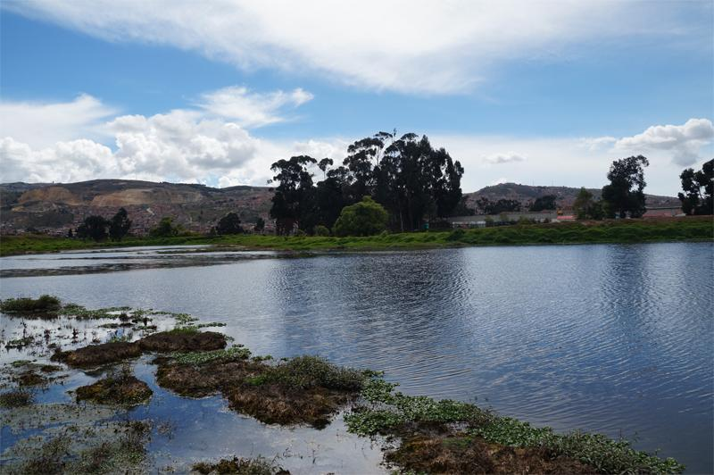

Apoyo a Mipymes y emprendimientos con enfoque turístico
La alcaldía está destinando recursos para apoyar a 40 micro, pequeñas y medianas empresas (Mipymes) y/o emprendimientos enfocados en el turismo local esto con el objetivo de fortalecer las capacidades de gestión y operación de emprendimientos que puedan convertirse en atractivos turísticos o que estén vinculados a la promoción de la identidad local (como productos típicos, recorridos históricos, experiencias gastronómicas o culturales).
Mas Informacion